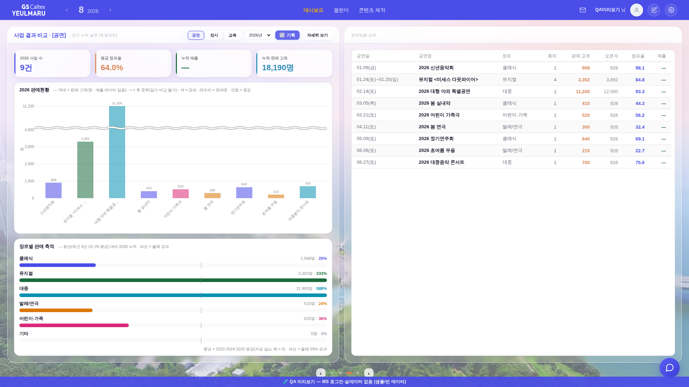
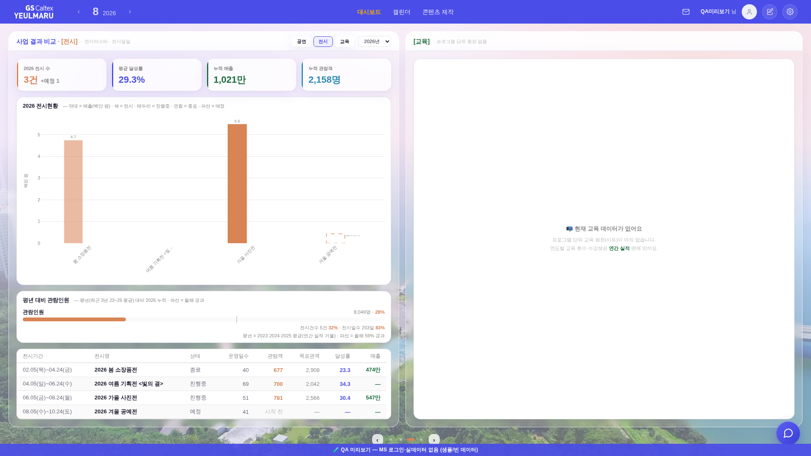

지시(운영자): 「사업 결과 비교 - [공연] 이라고 따로 해줘야할듯. 강조색 1번으로.」 → 「3면 안에서 공연, 전시, 교육 각각 누를때마다 탭전환, 기본이 공연 탭」 → 「기존에 공연이 하나로 모두 차지하던 구간을 딱 절반으로 나눔. 두개의 흰색칸으로 좌우 나뉨. 표기되는 내용은 동일」
새로 정할 게 없었다 — 1면 「연간 실적」의 _YR.cats 토큰이 그대로 운영자가 말한 강조색 1·2·3이다.
| 분야 | 토큰 | 값 | 강조색 |
|---|---|---|---|
| 공연 | --accent | #4A4DE7 | --c1 = 1번 |
| 전시 | --peach-text | #D88455 | --c2 = 2번 |
| 교육 | --green | #1A6B3C | --c3 = 3번 |

제목에 [공연] 꼬리표(강조색1) · 헤더에 분야 칩 공연 / 전시 / 교육. 본문은 같은 커밋 앞부분(장르별 축적 좌 하단 이동) 그대로.

좌 박스 = 전시 한 벌(KPI 4 · 전시현황 막대 · 평년 대비 관람인원 · 전시 목록) · 우 박스 = 교육. 좌·우 유리박스 상단선 Δ0 · 흰 도형 하단선 Δ0.1px(안선 밀착).
| 자리 | 공연 | 전시 |
|---|---|---|
| KPI | 사업 수 · 평균 점유율 · 누적 매출 · 누적 판매 고객 | 전시 수 · 평균 달성률 · 누적 매출 · 누적 관람객 |
| 막대 | 사업별 매출/판매 고객 · 색 = 장르 | 전시별 매출/관람객 · 색 = 분야색 고정(전시엔 장르 축이 없다) |
| 축적 | 장르별 평년 대비 (운영대장) | 평년 대비 관람인원 (연간 실적 거울 _YR.cats['전시']) · 건수·일수는 각주 한 줄 |
| 목록 | 공연일·공연명·장르·회차·판매 고객·오픈석·점유율·매출 | 전시기간·전시명·상태·운영일수·관람객·목표관객·달성률·매출 |
| 3상태 | 종료 / 판매중 / 예정(파선) | 종료 / 진행중 / 예정(파선) — 같은 채움·테두리·파선 규칙 |
막대는 _bizDrawSalesBars 한 벌을 그대로 쓴다(dom='exhib'면 라벨만 전시 용어). 소스 = _anaExhibBuild()(전시마스터·전시일일) — 새 집계 0.
앱에 프로그램 단위 교육 원천이 없다 — _railYrmFrame 주석 「교육은 아직 actives에 흘러들어오는 소스가 없어 평소엔 렌더되지 않는다」와 같은 사실.
있는 건 _YR.cats['교육'] 연도 합계(횟수·일수·수강생)뿐이고 2026은 0(집계 전)이다.
운영자 지시대로 「현재 교육 데이터가 없어요」만 표기하고, 연도별 수치가 있는 곳(연간 실적 면)을 한 줄로 가리킨다.
_srailAlignTop의 넘침 흡수 블록이 마지막 자식의 max-height를 지운다.
그런데 그 자식이 data-bizmcap이면 fill 패스가 min·max를 함께 쥐고 안선에 못 박아 둔 상태라,
max만 지워지면 min만 남아 요소가 자기 내용 높이까지 되살아난다. 조건이 scrollHeight ≤ 안선−자기상단이라
cap이 걸려 내용이 이미 잘린 상태에선 항상 참 → 매 패스마다 고정이 풀렸다.
data-bizmcap이면 이 블록은 손대지 않는다(그 요소는 이미 자기 안에서 스크롤한다)..fbar-chip으로 → 칩 안 14px 체크 인풋 3개가 헤더를 밀어 1512 이하에서 헤더가 2줄이 되고 좌 유리박스 상단선이 우보다 28px 내려갔다. → 글자만 있는 정본 필터 칩 .ana-chip으로 교체 + _bizmHead의 부제를 줄어드는 칸(말줄임)으로, 조작부를 flex-shrink:0으로 → 헤더는 늘 한 줄.smoke_layout에 3면 분야 축 왕복 검사 신설(전시·교육 → 공연 복귀). PASS 7종: 2560×1440 · 1920×1080 · 1600×900 · 1512×982 · 1440×820 · 1366×768 · 1280×800.data-bizmfill data-bizmcap을 일부러 떼면 3면(전시·교육): 흰 카드 하단 수평선 Δ707.0px로 정확히 FAIL(rc=1) → 새 검사 줄이 실제로 문다.tools/qa_mock_ops.mjs) — 형태만 재현, 실데이터·PII 미접촉.check_design 1590/1590(:root 2/0 무변) · check_refs ✓ · check_wiring ✓ · 인라인 JS 문법 8블록 ✓.